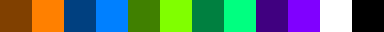

Introduction
You're here early! See other details here:
Palette

The 12-color default Reso palette
Twelve-color palette
There are ten semantically relevant colors which get compiled, the other 16777206 colors are ignored. Black and white are reserved to never have semantic meaning. Pixels with these colors define regions in the logic graph.
| Color | Meaning | Hex code | RGB | ASCII |
|---|---|---|---|---|
| Dark orange | Orange wire (off) | #804000 | (128, 64, 0) | o |
| Bright orange | Orange wire (on) | #ff8000 | (255, 128, 0) | O |
| Dark sapphire | Sapphire wire (off) | #004080 | ( 0, 64, 128) | s |
| Bright sapphire | Sapphire wire (on) | #0080ff | ( 0, 128, 255) | S |
| Dark lime | Lime wire (off) | #408000 | (64, 128, 0) | l |
| Bright lime | Lime wire (on) | #80ff00 | (128, 255, 0) | L |
| Dark teal | AND logic node | #008040 | ( 0, 128, 64) | & |
| Bright teal | XOR logic node | #00ff80 | ( 0, 255, 128) | ^ |
| Dark purple | Input (wire to node) | #400080 | ( 64, 0, 128) | + |
| Bright purple | Output (node to wire) | #8000ff | (128, 0, 255) | = |
| White | Comment/whitespace | #ffffff | (255, 255, 255) | |
| Black | Comment/whitespace | #000000 | ( 0, 0, 0) | |
For backwards compatibility with new functionality, we reserve a total of 48 colors. (This is by convention and is not enforced by the Reso simulator.)
Reserved 48-color palette
The ten colors above (other than black and white) are semantically relevant, which means all the other valid three-byte RGB values are not.
New features will use new colors. Reso is at 0.0.x, so no promises, but we'll try to stick within these 48 values for any new features:
| Hue | Saturated (1) | Dark (2) | Light (3) | Unsaturated (4) |
|---|---|---|---|---|
| Red (R) | #ff0000 | #800000 | #ff8080 | #804040 |
| Yellow (Y) | #ffff00 | #808000 | #ffff80 | #808040 |
| Green (G) | #00ff00 | #008000 | #80ff80 | #408040 |
| Cyan (C) | #00ffff | #008080 | #80ffff | #408080 |
| Blue (B) | #0000ff | #000080 | #8080ff | #404080 |
| Magenta (M) | #ff00ff | #800080 | #ff80ff | #804080 |
| Orange (O) | #ff8000 | #804000 | #ffc080 | #806040 |
| Lime (L) | #80ff00 | #408000 | #c0ff80 | #608040 |
| Teal (T) | #00ff80 | #008040 | #80ffc0 | #408060 |
| Sapphire (S) | #0080ff | #004080 | #80c0ff | #406080 |
| Purple (P) | #8000ff | #400080 | #c080ff | #604080 |
| Violet (V) | #ff0080 | #800040 | #ff80c0 | #804060 |
Palette downloads
Grab the palette in a convenient format!
Downloads mirrored from RESO-12 at lospec.com.
- .png (1x pixels),
- .png (8x pixels),
- .png (32x pixels),
- .ase (Photoshop)
- .gpl (GIMP)
- .txt (Paint.NET)
- .hex (line-separated list of hex)
{kind=link}
{kind=link}
{kind=link}
Also available in raw hex, if copy-and-paste is more your thing:
804000,ff8000,004080,0080ff,408000,80ff00,008040,00ff80,400080,8000ff,ffffff,000000
Submit an issue if there's a convenient palette format you'd like to see. The RESO-12 palette is also available
Alternative palettes
Future versions of Reso will have support for 100% ASCII-based workflows, and for palette mappings, allowing you to execute Reso circuits over any language of your choosing.
Trivia and history
"Reso" refers to both the circuit description language and the simulator.
Reso is not a cellular automaton, because regions of cells update neighboring regions, allowing them infinite reach, whereas cellular automata operate over a finite neighborhood.
Reso instead defines a digital logic circuit graph. That is to say, the visual language is used to define a logic graph.
Reso is called "visual" rather than "graphical", because saying "the visual language is compiled to a graph" is less confusing than "the graphical language is compiled to a graph".
History
In 2015, took a digital logic design course at UConn and came up with the initial sketch for Reso. This course lifted the veil on the fantastic Minecraft Redstone computers I had seen years prior. I proposed the idea as a senior design project in 2017, but it was rejected.
Early 2018, I implemented a custom three-species Game of Life and a three-species Brian's Brain-esque cellular automata. Implementing these gave me good enough chops at working on a grid to implement Reso.
So I ultimately implemented Reso in Python in the summer of 2018. You can see the original Python implementation here.. I tried learning Rust this summer with the intention of reimplementing Reso, but I didn't get too far.
In 2021, I reworked Reso, updating the palette and logo and cleaning up the code for presentation at the 2021 BangBangCon (!!Con).
In 2022, ashirviskas made a Rust implementation, but I honestly did not know enough Rust to understand it! I went back to doing my own implementation.
Early 2023, I was able to start writing Rust in earnest. I learned a lot while writing Phantasm, a fantasy assembly language.
Over this whole time, Reso was stewing in my mind, and I realized a number of improvements that could be made. So, when I reimplemented Reso in Rust in late 2023, I did a complete overhaul, with very little translation from the original Python source.
Honestly, I am not great at Rust. If you're someone who thinks they know better, I'd happily welcome improvements and criticism!
See also
I'm not the first person to come up with the idea of an executable, drawn-circuit!
- Mentioned above,
ashirviskasmade a Rust implementation too! - Various cellular automata are Turing complete and can be used to build a processor.
- Conway's Game of Life -- A Turing-complete zero-player-game. By far the most popular cellular automata. Rest in Peace John Conway.
- Wireworld -- Another cellular automata in which it is easy to implement logic circuits.
- Brian's Brain -- A cellular automaton similar to the previous.
- Bitmap Logic Simulator -- I'm not sure how this works, but check it out! It's a similar idea.
- Turing Paint and Doodle Code, which have a similar idea of "doodle-able logic circuits".
- Wired Logic, similar to wire-world, simulating circuits in an image.
- Lots of games:
- Minecraft especially for redstone, an in-game resource that lets you build circuits.
- Zacktronics, known for games which focus heavily on computation.
- Hempuli is one of my favorite game devs, and seeing their development on Baba Is You kept my brain on the right track for this.
- This in-browser videogame that has you build circuits and solve problems.
Projects with a similar name
Reso was influenced by redstone, esolangs, and Python. The goal was to make digital logic circuits that could be built by anybody who can use MS Paint.
- The Real Estate Standards Organization, which is completely unrelated to this.
- 18kimn/Reso, an unrelated project which turns R into an esoteric language.